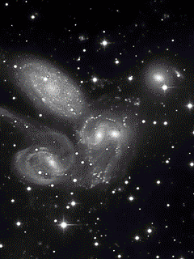
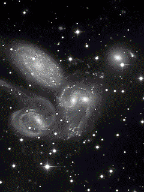
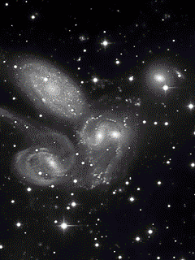

Los cúmulos de galaxias son gigantescas estructuras del Universo. Las galaxias emiten muchísima gravedad. Esto hace que las galaxias cercanas se atraigan entre sí y se agrupen formando cúmulos.Nuestra galaxia, la Vía Láctea, forma parte de un pequeño cúmulo llamado Grupo Local. Dentro de un cúmulo, las galaxias giran unas en torno a otras, e incluso es frecuente que choquen. El tamaño y la masa de un cúmulo varía según las galaxias que lo formen, pero la distancia entre un extremo y otro es siempre de varios millones de años luz. Los cúmulos no se componen sólo de galaxias, sino también de grandes nubes de gas caliente. En general, son restos de galaxias que mueren al chocar entre sí. Pero la mayor parte de la masa del cúmulo es materia oscura. Se cree que cada cúmulo puede tener hasta cinco veces más materia oscura que materia visible.En los cúmulos predominan las galaxias elípticas e irregulares, fruto de la interacción de galaxias. También son comunes las galaxias lenticulares de las que se sospecha que en bastantes casos pueden proceder de galaxias espirales que han perdido su gas y por tanto su capacidad de formar estrellas. Esto se debe al rozamiento causado por su movimiento a través del gas intergaláctico o a las interacciones con otras galaxias del cúmulo.

Los cúmulos no se componen sólo de galaxias, sino también de grandes nubes de gas caliente. En general, son restos de galaxias que mueren al chocar entre sí. Pero la mayor parte de la masa del cúmulo es materia oscura. Se cree que cada cúmulo puede tener hasta cinco veces más materia oscura que materia visible. Los cúmulos de galaxias tienen forma esférica o espiral y giran en torno a un nucleo central. Este núcleo acoge la mayor parte del gas caliente y emite una gran cantidad de rayos X. Las galaxias más densas se situan cerca del centro, donde la gravedad es mayor. Alrededor, se dispersan miles de galaxias entre nubes de gas.Los cúmulos de galaxias tienen forma esférica o espiral y giran en torno a un nucleo central. Este núcleo acoge la mayor parte del gas caliente y emite una gran cantidad de rayos X. Las galaxias más densas se situan cerca del centro, donde la gravedad es mayor. Alrededor, se dispersan miles de galaxias entre nubes de gas.Los cúmulos de galaxias tienen forma esférica o espiral y giran en torno a un nucleo central. Este núcleo acoge la mayor parte del gas caliente y emite una gran cantidad de rayos X. Las galaxias más densas se situan cerca del centro, donde la gravedad es mayor. Alrededor, se dispersan miles de galaxias entre nubes de gas.